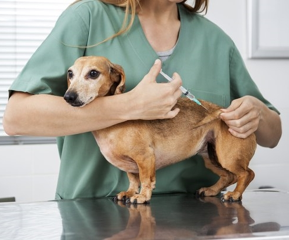

Desde 2017, All Pets cuida de muitos dos pets mais maravilhosos da área do Brasil.
Para cada membro de nossa equipe, o trabalho que fazemos é o trabalho que amamos. Mimar e amar seus pets é o motivo de estarmos aqui. Nossa equipe é apaixonada por pets e está pronta para atender as necessidades dos animais. Além disso, nossos profissionais são treinados qualificados na área, tornando um lugar tranquilo, agradável e seguro para você e o seu pet.